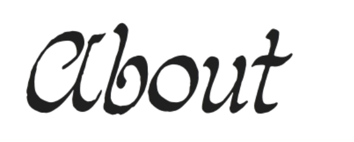
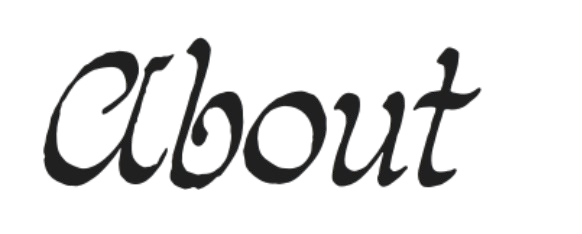

2024
My short film "Monster in the Mirror" explores the themes of femininity and Eurocentric beauty, and the toll these subjects have on young minority girls who are blossoming into their adolescence. Engaging with critical text and poetry that explore the themes of ethnicity and feeling sub-human, "Monster in the Mirror" aims to explore these feelings in the format of a coming-of-age story. I hope to invoke a message within my film that shows that— perhaps, yes, being a racial minority makes us different, but that doesn't mean we are monstrous. Symbolized by the monster, created by other pieces of native animals from Japan, Puerto Rico, and North America, I am to capture the feeling of not feeling comfortable in your skin and the sense of not feeling that you belong.
2025
An interactive Y2K-inspired plaid pattern generator built with p5.js. Click to generate new patterns, press SPACE to change styles, and press R for random animations. This project explores generative art and nostalgic design aesthetics from the early 2000s.
2025
I bring two distinct types of editing experience to my work: hard and soft editing. Each approach serves different purposes and audiences.
In my editing classes, I focused primarily on style and grammar revision. The curriculum emphasized identifying and addressing fundamental issues with organization, argument, and clarity. We practiced traditional hand-editing techniques, putting marks on manuscripts to develop a tactile understanding of the revision process. This intensive approach taught me to see the bigger picture and help writers reshape their work at the conceptual level.
During my editorial internship, I specialized in lighter, more targeted editing using Microsoft Word's track changes feature. This digital approach allowed for efficient collaboration with authors while focusing on grammar, syntax, and style consistency. The streamlined process was ideal for drafts that needed polishing rather than major restructuring.